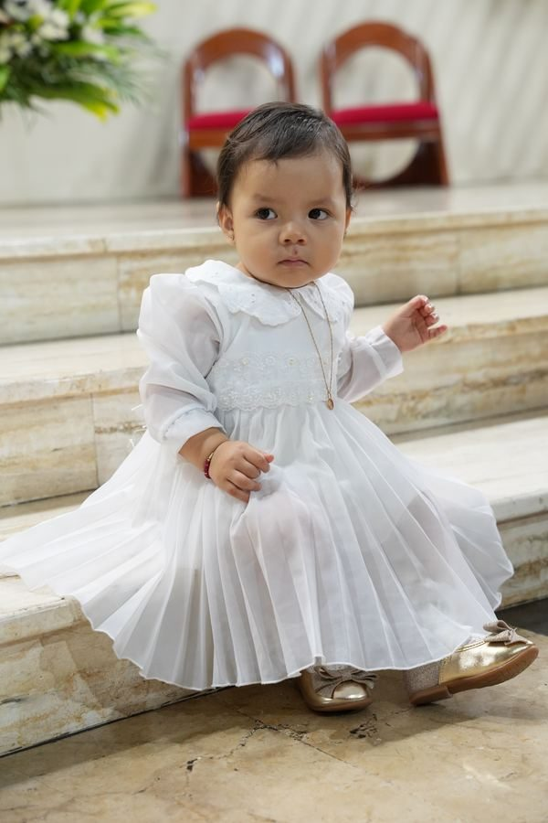

Recursos gratuitos
Planea con calma.
Disfruta el momento.
Guías prácticas para que las fotografías importantes no dependan de la memoria o la improvisación del último minuto.

Checklist de fotos para tu evento
Una lista editable para identificar personas, detalles y momentos importantes antes de conversar con tu fotógrafo.
Abrir el checklist